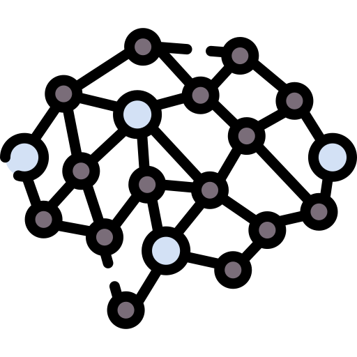

Estadística
Estudiar una carrera en esta área me ha permitido ser capaz de realizar análisis robustos con una metodología apegada al método científico en conjunto a la rigurosidad que esto implica.

Ciencias de Datos
A través de flujos de ciencias de datos, soy capaz de analizar y modelar diversos conjuntos de datos utilizando tecnologías actualmente a la vanguardia, para estudiar fenómenos y generar predicciones e interpretabilidad a los hechos.

Aprendizaje Profundo
Utilizando frameworks aptos, soy competente para modelar redes neuronales convolucionales y recurrentes, lo que expande mi horizonte a análisis de datos no estructurados como imágenes y modelos de series temporales robustos.

Desarrollo Web
Frente a la necesidad de facilitar el acceso a la estadística, ciencias de datos y modelos de aprendizaje profundo a los usuarios, he decidido aprender desarrollo web para ofrecer interfaces web sencillas de manejar y entender.